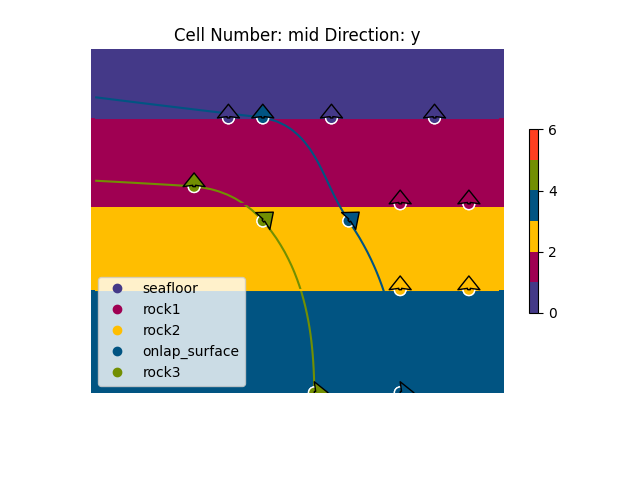
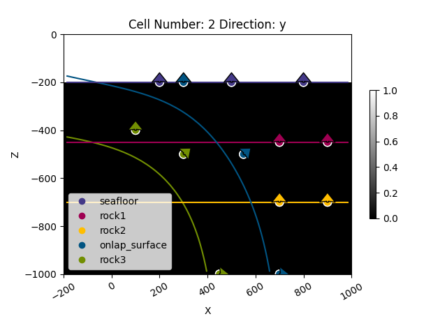
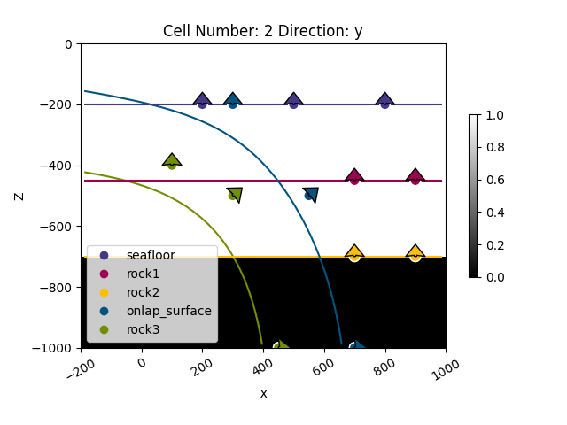
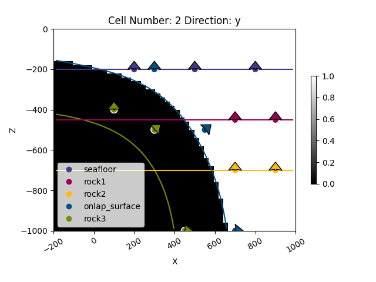

Note
Click here to download the full example code
1.4: Unconformity relationships¶
Importing gempy
import gempy as gp
# Aux imports
import numpy as np
import pandas as pd
import os
np.random.seed(1515)
pd.set_option('precision', 2)
We import a model from an existing folder, representing a subduction zone with onlap relationships. The theano function is automatically recombined to allow changes.
cwd = os.getcwd()
if not 'examples' in cwd:
data_path = os.getcwd() + '/examples/'
else:
data_path = cwd + '/../../'
geo_model = gp.load_model(r'Tutorial_ch1-8_Onlap_relations',
path=data_path + 'data/gempy_models/Tutorial_ch1-8_Onlap_relations',
recompile=True)
geo_model.meta.project_name = "Onlap_relations"
Out:
Active grids: ['regular']
Setting kriging parameters to their default values.
Compiling theano function...
Level of Optimization: fast_compile
Device: cpu
Precision: float64
Number of faults: 0
Compilation Done!
Kriging values:
values
range 1854.72
$C_o$ 81904.76
drift equations [3, 3, 3, 3, 3]
nugget grad 0.01
nugget scalar 0.0
Out:
<gempy.plot.visualization_2d.Plot2D object at 0x7fcc41806fd0>
geo_model.set_regular_grid([-200, 1000, -500, 500, -1000, 0], [50, 50, 50])
geo_model.set_topography(d_z=np.array([-600, -100]))
Out:
Active grids: ['regular']
Active grids: ['regular' 'topography']
Grid Object. Values:
array([[-188. , -490. , -990. ],
[-188. , -490. , -970. ],
[-188. , -490. , -950. ],
...,
[1000. , 459.18367347, -508.13810685],
[1000. , 479.59183673, -499.68180865],
[1000. , 500. , -498.66045422]])
s = gp.compute_model(geo_model, compute_mesh=True, debug=False)
Out:
/WorkSSD/PythonProjects/gempy/gempy/core/solution.py:173: VisibleDeprecationWarning: Creating an ndarray from ragged nested sequences (which is a list-or-tuple of lists-or-tuples-or ndarrays with different lengths or shapes) is deprecated. If you meant to do this, you must specify 'dtype=object' when creating the ndarray.
self.geological_map = np.array(
gp.plot_2d(geo_model, cell_number=25, show_data=True)
Out:
<gempy.plot.visualization_2d.Plot2D object at 0x7fcc7498beb0>
gp.plot_2d(geo_model, 2, regular_grid=geo_model.solutions.mask_matrix_pad[0],
show_data=True, kwargs_regular_grid={'cmap': 'gray', 'norm': None})
gp.plot_2d(geo_model, 2, regular_grid=geo_model.solutions.mask_matrix_pad[1],
show_data=True, kwargs_regular_grid={'cmap': 'gray', 'norm': None})
gp.plot_2d(geo_model, 2, regular_grid=geo_model.solutions.mask_matrix_pad[2],
show_data=True, kwargs_regular_grid={'cmap': 'gray', 'norm': None})
gp.plot_2d(geo_model, 2, regular_grid=geo_model.solutions.mask_matrix_pad[3],
show_data=True, kwargs_regular_grid={'cmap': 'gray', 'norm': None})
- 
- 
- 
- 
Out:
<gempy.plot.visualization_2d.Plot2D object at 0x7fcc466ccf70>
sphinx_gallery_thumbnail_number = 7
p3d = gp.plot_3d(geo_model, show_surfaces=True, show_data=True, image=False,
show_topography=True,
kwargs_plot_structured_grid={'opacity': .2})
gp.save_model(geo_model)
Out:
True
Total running time of the script: ( 0 minutes 6.901 seconds)